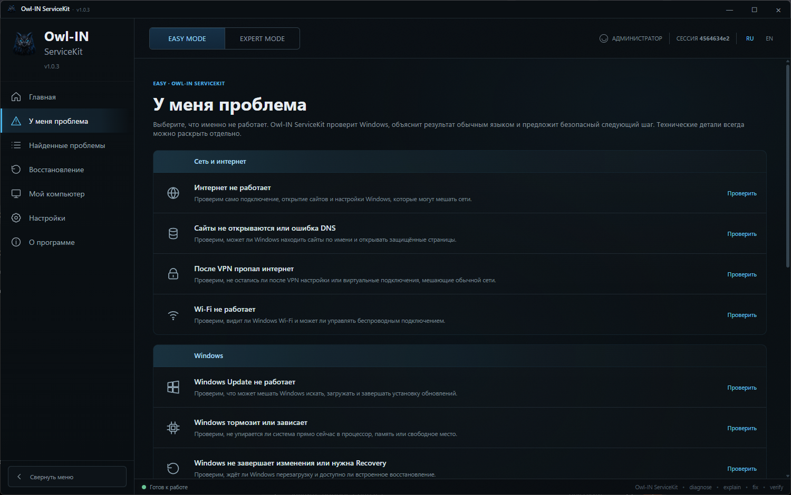
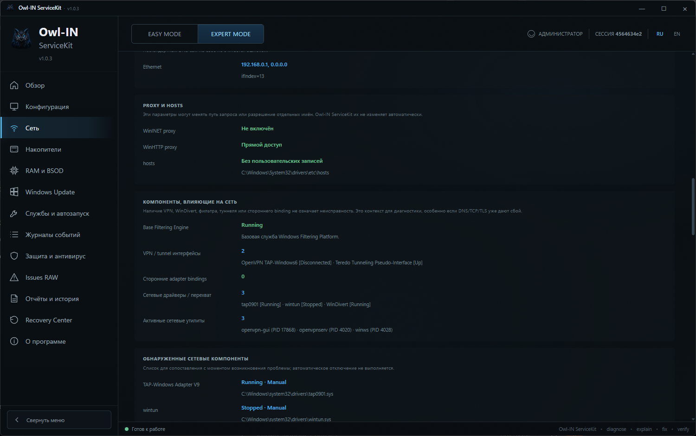

⌁
Быстрая диагностика
Quick Scan и сценарии «У меня проблема» для распространённых проблем Windows.
Диагностика Windows и контролируемое восстановление. Два режима — для быстрого решения проблемы и для подробного технического анализа.
Owl-IN ServiceKit собирает технические данные Windows, объясняет найденное и предлагает доступные действия восстановления там, где их можно выполнить безопасно.
Quick Scan и сценарии «У меня проблема» для распространённых проблем Windows.
DNS, прокси, hosts, VPN/TUN, сетевые компоненты и состояние подключения.
Windows Update, системные службы, автозапуск и события Windows.
Диагностика накопителей, RAM/BSOD и связанных системных признаков.
Анализ фоновой активности с учётом процессов, путей, подписи и автозапуска.
Резервирование состояния, проверка результата и откат для поддерживаемых действий.
Обычному пользователю не нужно читать журналы событий, а техническому специалисту не нужно терять подробности.
Выберите симптом. Owl-IN ServiceKit проверит связанные компоненты, объяснит результат обычным языком и покажет безопасный следующий шаг.
Конфигурация, сеть, накопители, RAM/BSOD, Windows Update, службы, события, безопасность и RAW-данные без упрощения.
Действия выстроены вокруг контролируемого изменения системы, а не набора случайных твиков.
Ниже — реальные экраны Owl-IN ServiceKit.


Портативная Windows-сборка распространяется одним EXE через GitHub Releases. Установка не требуется.
Нет. Текущий публичный выпуск запускается из одного EXE без отдельной установки.
Диагностика и изменение состояния разделены. Доступные действия восстановления выполняются отдельно; для поддерживаемых действий используется резервирование, проверка результата и откат.
Easy Mode строится вокруг симптомов и понятного объяснения результата. Expert Mode показывает подробные технические данные и инструменты диагностики.
Официальные публичные сборки размещаются в GitHub Releases репозитория Owl-IN ServiceKit.
Нет. Публично доступна релизная сборка и документация проекта; исходный код текущей версии не опубликован.